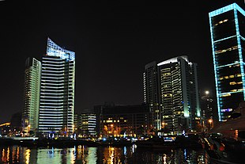

Economy of Lebanon
|  | |
| Currency | Lebanese Lira (LBL) |
|---|---|
| Calendar | |
Trade organisations | CAEU |
Country group |
|
| Statistics | |
| Population | 6,825,232 (20 April 2020)[3] |
| GDP | |
GDP per capita | [6] |
GDP by sector |
|
| 210% (2022 est.)[8] | |
Population below poverty line | |
| 31.8 medium (2011)[11] | |
Labour force | |
Labour force by occupation |
|
| Unemployment | 6.2% (2019)[17] |
Main industries | banking, tourism, real estate and construction, food processing, wine, jewelry, cement, textiles, mineral and chemical products, wood and furniture products, oil refining, metal fabricating |
| External | |
| Exports | |
Export goods | jewelry, base metals, chemicals, consumer goods, fruit and vegetables, tobacco, construction minerals, electric power machinery and switchgear, textile fibers, paper |
Main export partners |
|
| Imports | |
Import goods | petroleum products, cars, medicinal products, clothing, meat and live animals, consumer goods, paper, textile fabrics, tobacco, electrical machinery and equipment, chemicals |
Main import partners |
|
FDI stock | |
Gross external debt | |
| Public finances | |
| US$74.5 billion[20][21] (Sep 2018), 140% of GDP (2018) | |
| −6.9% (of GDP) (2017 est.)[7] | |
| Revenues | 11.62 billion (2017 est.)[7] |
| Expenses | 15.38 billion (2017 est.)[7] |
| Economic aid | recipient $5.4 billion (2014 est.) |
All values, unless otherwise stated, are in US dollars. | |
{kind=link}
The economy of Lebanon has been experiencing a large-scale multi-dimensional crisis since 2019,[25] including a banking collapse, the Lebanese liquidity crisis and a sovereign default.[26] It is classified as a developing, lower-middle-income economy. The nominal GDP was estimated at $19 billion in 2020,[4] with a per capita GDP amounting to $2,500. In 2018 government spending amounted to $15.9 billion,[27] or 23% of GDP.
The Lebanese economy went through a significant expansion after the 34-day war of 2006, with growth averaging 9.1% between 2007 and 2010.[28] After 2011 the local economy was affected by the Syrian civil war, growing by a yearly average of 1.7% on the 2011–2016 period and by 1.5% in 2017.[28] In 2018, the size of the GDP was estimated to be $54.1 billion.[29] Between 2019 and 2021, the economy shrank by 53.4%, the highest contraction in a list of 193 countries.[30] Since 2020, the International Monetary Fund no longer publish data on the Lebanese economy.
Lebanon is the third-highest indebted country in the world in terms of debt-to-GDP ratio. As a consequence, interest payments consumed 48% of domestic government revenues in 2016, thus limiting the government's ability to make needed investments in infrastructure and other public goods.[31]
The Lebanese economy is service-oriented. Lebanon has a strong tradition of laissez-faire, with the country's constitution stating that "the economic system is free and ensures private initiative and the right to private property". The major economic sectors include metal products, banking, agriculture, chemicals, and transport equipment. The main growth sectors include banking and tourism. There are no restrictions on foreign exchange or capital movement.[32]
History
[edit]| Year | Lebanon | MENA avg |
|---|---|---|
| 1972 | 5,322 | 3,346 |
| 1981 | 5,897 | 3,581 |
| 1982 | 3,970 | 3,681 |
| 1983 | 5,064 | 3,781 |
| 1984 | 7,592 | 3,903 |
| 1985 | 9,613 | 3,980 |
| 1986 | 9,025 | 3,873 |
| 1987 | 10,722 | 3,869 |
| 1988 | 7,875 | 3,826 |
| 1989 | 4,674 | 4,001 |
| 1990 | 4,158 | 4,191 |
| 1991 | 5,649 | 4,472 |
| 1992 | 5,925 | 4,570 |
| 1993 | 6,352 | 4,658 |
| 1994 | 6,868 | 4,764 |
| 1995 | 7,320 | 4,860 |
| 1996 | 7,606 | 5,138 |
| 1997 | 7,892 | 5,352 |
| 1998 | 8,031 | 5,512 |
| 1999 | 7,928 | 5,585 |
| 2000 | 8,077 | 5,876 |
| 2001 | 8,478 | 6,063 |
| 2002 | 8,792 | 6,261 |
| 2003 | 9,144 | 6,711 |
| 2004 | 9,959 | 7,175 |
| 2005 | 10,367 | 7,360 |
| 2006 | 10,751 | 7,882 |
| 2007 | 11,893 | 8,354 |
| 2008 | 13,116 | 8,735 |
| 2009 | 14,197 | 10,862 |
| 2010 | 15,168 | 10,920 |
| 2011 | 15,523 | 11,896 |
| 2012 | 15,985 | 13,088 |
{kind=link}
The 1975–1990 Lebanese Civil War seriously damaged Lebanon's economic infrastructure, cut national output by half,[35] and had major consequences for Lebanon's position as a Middle Eastern entrepot and banking hub.[36] After the war, the central government regained its ability to collect taxes and control key port and government facilities. As a result, GDP per capita expanded 353% in the 1990s.[37] Economic recovery has been helped by a financially sound banking system and resilient small- and medium-scale manufacturers, with family remittances, banking services, manufactured and farm exports, and international aid as the main sources of foreign exchange.[38] Lebanon's economy has made impressive gains since the launch of "Horizon 2000," the government's $20 billion reconstruction program in 1993. Real GDP grew 8% in 1994 and 7% in 1995 before Israel's Operation Grapes of Wrath in April 1996 stunted economic activity. Real GDP grew at an average annual rate of less than 3% per year for 1997 and 1998 and only 1% in 1999. During 1992–98, annual inflation fell from more than 100% to 5%, and foreign exchange reserves jumped to more than $6 billion from $1.4 billion. Burgeoning capital inflows have generated foreign payments surpluses, and the Lebanese pound has remained relatively stable. Progress also has been made in rebuilding Lebanon's war-torn physical and financial infrastructure. Solidere, a $2-billion firm, is managing the reconstruction of Beirut's central business district; the stock market reopened in January 1996, and international banks and insurance companies are returning. The government nonetheless faces serious challenges in the economic arena. It has had to fund reconstruction by tapping foreign exchange reserves and boosting borrowing. Reducing the government budget deficit is a major goal of the current government. The gap between rich and poor grew in the 1990s, resulting in popular dissatisfaction over the skewed distribution of the reconstruction's benefits and leading the government to shift its focus from rebuilding infrastructure to improving living conditions.
After the end of the civil war, Lebanon enjoyed considerable stability, Beirut's reconstruction was almost complete,[39] and increasing numbers of tourists poured into the nation's resorts.[40] The economy witnessed growth, with bank assets reaching over US$75 billion,[41] Market capitalization was also at an all-time high, estimated at $10.9 billion at the end of the second quarter of 2006.[41] The month-long 2006 war severely damaged Lebanon's economy, especially the tourism sector.[42] Over the course of 2008 Lebanon rebuilt its infrastructure mainly in the real estate and tourism sectors, resulting in a comparatively robust post war economy. Major contributors to the reconstruction of Lebanon include Saudi Arabia (with US$1.5 billion pledged),[43] the European Union (with about $1 billion)[44] and a few other Persian Gulf countries with contributions of up to $800 million.[45]
Given the frequent security turmoil it has faced, the Lebanese banking system has adopted a conservative approach, with strict regulations imposed by the central bank to protect the economy from political instability. These regulations have generally left Lebanese banks unscathed by the financial crisis of 2007–2008. Lebanese banks remain, under the current circumstances, high on liquidity and reputed for their security.[46] In late 2008, Moody's shifted Lebanon's sovereign rankings from stable to positive, acknowledging its financial security.[47] Moreover, with an increase of 51% in the Beirut stock market, the index provider MSCI ranked Lebanon the world's best performer in 2008.[48] Lebanon is one of the only seven countries in the world in which the value of the stock market increased in 2008.[48] The Lebanese economy experienced continued resilience, growing 8.5 percent in 2008, 7 percent in 2009 and 8.8% in 2010. However, Lebanon's debt to GDP ratio remained one of the highest in the world.[49]
The Syrian crisis has significantly affected Lebanese economic and financial situation. The demographic pressure imposed by the Syrian refugees now living in Lebanon has led to competition in the labour market. As a direct consequence unemployment has doubled in three years, reaching 20% in 2014. A loss of 14% of wages regarding the salary of less-skilled workers has also been registered. The financial constraints were also felt: the poverty rate increased with 170,000 Lebanese falling under the poverty threshold. In the period between 2012 and 2014, the public spending increased by $1 billion and losses amounted to $7.5 billion. Expenditures related only to the Syrian refugees were estimated by the Central Bank of Lebanon as $4.5 billion every year.[50]
The International Monetary Fund issued a second report on Lebanon in October 2015, where its expectations of the economic growth rate were lowered to 2%, compared to the 2.5% growth rate of the first report, released in April 2015.[51]
In October 2019, Lebanon witnessed nationwide protests that erupted over the country's deteriorating economic conditions. Thousands of demonstrations took to the streets of downtown Beirut, calling for the government of Prime Minister Saad al-Hariri to quit over "its utter failure to stop the deterioration of the economic and living conditions in the country". The protests began after the government announced to charge 20 cents per day for voice over internet protocol (VOIP) use over social media apps, including WhatsApp, Facebook, and other applications.[52]
Lebanon has a very high level of public debt and large external financing needs.[53] The 2010 public debt exceeded 150.7% of GDP, ranking fourth highest in the world as a percentage of GDP, though down from 154.8% in 2009.[54] At the end 2008, finance minister Mohamad Chatah stated that the debt was going to reach $47 billion in that year and would increase to $49 billion if privatization of two telecoms companies did not occur.[55] The Daily Star wrote that exorbitant debt levels have "slowed down the economy and reduced the government's spending on essential development projects".[56]
During the early part of 2020, the central bank (BdL) defaulted on $90 sovereign debt obligations and the government needed recourse to the IMF for a shortfall of $50 billion.
On 4 August 2020, the explosion of 2,750 tons ammonium nitrate in a Beirut port warehouse caused the destruction of the "only large grain silo" in the country,[57] in addition to more than 200 people killed and several square kilometres of pulverised buildings in the downtown core of the city. By 9 August, President of France Emmanuel Macron had counted over €250 million of global contributions to the relief effort.[58] On 10 August, the government of Hassan Diab resigned.[59] The day before, IMF director Kristalina Georgieva had laid down four conditions for the co-operation of her organization:[59]
- restoring the financial solvency of the state,
- cutting losses at state-owned companies,
- passing a law to regulate capital outflows and
- setting up a social safety net.
On 14 August, the United Nations Office for the Coordination of Humanitarian Affairs (UNOCHA) launched a $565 million appeal for donors of aid to victims of the explosions. The UN effort was to focus on: meals, first aid, shelters, and repair of schools. Some of the money that Macron collected would be used by the UNOCHA.[60]
2019–present economic crisis
[edit]According to a World Bank report, Lebanon's economy which was structurally strained before the Syrian shock suffered a real blow as an aftermath of the Syrian crisis which brought around 1.5 million Syrian refugees into Lebanon.[61] The GDP growth rate declined to around 1 percent in 2018.[62] In August 2019, the USD parallel exchange rate started diverging from the official exchange rate; the official exchange rate for the USD had been £L1,507.5 since 1997, while the parallel exchange rate was £L1,600 in the fall of 2019 and would increase to around £L4,200 in May 2020.[63][64] The USD parallel exchange rate is increasing because of the dollar shortage in Lebanon.[65] In a bid to lower the dollar price, the central bank made an agreement with the licensed exchangers to make the official rates on offer at £L3,860/3,910.[66] However, despite the central bank's efforts, on 23 June 2020, the black market dollar reached a staggering rate of £L 6,075 devaluing the Lebanese pound by 75%.[67] This dollar shortage also caused 785 restaurants and cafes to close between September 2019 and February 2020 and caused 25,000 employees to lose their jobs.[68][69] This economic crisis made Lebanon's gross domestic product fall to about $44 billion, which was about $55 billion the year before.[70] The crisis became worse when the COVID-19 pandemic affected the Lebanese economy.[71] In 2020, the country defaulted for the first time on $30 billion in bonds and tried to seek help from the IMF but the negotiations never reached fruition.[72][73]
The liquidity crisis also lead to a restriction on the withdrawals from US dollar bank accounts.[74] Depositors needed to preserve the value of their savings, especially following press reports about possible haircuts and restructuring of the banking sector. They therefore turned to buying real estate.[75] For example, revenues from land sales of the major real estate developer, Solidere company, soared from nearly $1.3 million to $234.5 million.[76] Also, these depositors turned to buying shares in Solidere company, which lead to a rise of 500% in its price between the start of the liquidity crisis and April 2021.[77]
The already battered economy of Lebanon suffered fresh blow with the port blast on 4 August 2020. Economists have claimed that the blasts could result in the contraction of Beirut's GDP by around 20–25% for the year. The current figure surpasses IMF's last forecast of 12% crash in GDP because of the ongoing and increasing economic and political crisis in Lebanon.[78]
In March 2021, Lebanon approved an emergency assistance package from the World Bank worth $246 million in order to support struggling families and strengthen the social safety and try to face the economic crisis.[79]
On March 16, as the Lebanese pound jumped on the black market from £L13,000 to £L15,000 against the US dollar, protesters took to the streets, grocery stores closed and bakeries threatened to close.[80]
After the meeting of the President Aoun and Prime Minister-designate Saad Hariri on March 18, the Lebanese pound dropped from £L15,000 against the dollar on the black market to £L12,500.[81]
As of 2023, Lebanon is considered by some to have become a failed state, suffering from chronic poverty, economic mismanagement and a banking collapse.[82]
Causes
[edit]External debt
[edit]After the civil war, the Lebanese government resorted to massive borrowing to finance its post-war restructuring. The yearly growth of gross debt between 1993 and 1995 was 123 percent and between 1995 and 2000 was 171 percent.[83] Between 2005 and 2018, the yearly growth of debt has averaged around 22 percent and in comparison, the GDP growth rate for the same period has been in single digits with an exception of 2009. This high debt has caused Lebanon to spend a big chunk of its revenues in debt servicing, on an average, close to 45 percent is spent by the government as interest payments. In 1996, interest payments made up almost 68 percent of that year's budget deficit.[84] With debt piling up and growth being minuscule, Lebanon's debt to GDP ratio reached 178 percent by the end of 2019, which makes it the third most indebted country after Greece and Japan.[85] In 2020, Beirut defaulted on a $1.2 billion external bond, the first sovereign default since in its history. The nation is currently in discussions with a group of creditors about a possible restructuring of a defaulted Eurobond. [86][87] A successful restructuring would allow the country to again access external credit markets.
Currency crisis
[edit]Lebanon's national currency, the Lebanese pound is pegged to the US dollar at £L15,000 to US$1. This fixed rate has been unstable due to the depreciating value of the pound in the black market. According to reports, the pound was trading at £L8,100 to US$1 in 2019 on the black market. The causes of the pound's depreciation can be traced back to the economy's dependence on imports. Lebanon in 2018 imported US$20 bn worth of goods and exported goods worth only US$3 bn.[88][63] This trade deficit also widened as the remittances share, which was around 24 percent in 2008 declined to nearly 12 percent in 2018. This coupled with geopolitical tensions of the region, caused the Pound-Dollar peg rate to wither. As a response, the central bank resorted to more borrowing and also issued a directive that required all money transfer offices to cash out transfers in the local currency, further exacerbating the dollar crunch.[89][90][66]
Corruption and political instability
[edit]After a devastating explosion in Beirut on 4 August 2020 that killed at least 200 people, the government, headed by Prime Minister Hassan Diab, announced that his government was stepping down. In his speech, Mr. Diab said that corruption cases were widespread in the country's political and administrative landscape; other calamities hiding in many minds and warehouses, and which pose a great threat, are protected by the class that controls the fate of the country.[90][78]
According to reports, the financial troubles and political inaction had caused growing anger and frustration among people who began protesting in October last year. Protesters demanded an end to corruption and the resignation of political leaders including the then Prime Minister Saad al-Hariri. This year, the newly formed government under Diab faced the same accusations of corruption.[91] In November 2019, The central bank of Lebanon was accused of running a Ponzi scheme as it relied on fresh borrowing to service its debt. The bank denied the allegations stating that its action was in par with the 1963 Code of Money and Credit.[92] Amidst the failing banking system, banks resorted to putting informal curbs on dollar withdrawals and international transfers, stirring mass protests and police violence.[93] The pandemic brought the protests to a halt for some time but the port explosion in Beirut once again brought people to the streets, who, as reports state, have lost faith in the political elite.[90] Some estimates state that half of Lebanon's population is living near or below the poverty line and thousands of people have lost their jobs. There have been incessant power cuts and some residents have been calling the blackouts worse than those witnessed in the 1975–1990 civil war.[91]
Trade
[edit]{kind=link}
{kind=link}
Lebanon's trade balance is structurally negative. In 2017, the trade deficit reached $20.3 billion. The country imported $23.1 billion[94] worth of goods and services, and exported $2.8 billion.[95]
Lebanon has a competitive and free market regime and a strong laissez-faire commercial tradition. The Lebanese economy is service-oriented; main growth sectors include banking and tourism. There are no restrictions on foreign exchange or capital movement.[citation needed]
Food security
[edit]Food accounted for 18% of the dollar value of the imports to Lebanon in 2018, according to World Bank statistics.[96] Wheat and livestock are two foodstuffs for which Lebanon is import-dependent.[96] Around 90 percent of imported wheat is sourced from Ukraine and Russia.[96] The wheat reserves of Lebanon are kept in silos at the Port of Beirut and cover about three months of consumption.[96] In 2019, domestic wheat production measured 130,000 tons, while wheat imports measured 570,000 tons.[96]
The food security of Lebanon is a subject of debate. On the one hand, administrators of the UNESCWA used the World Food Programme in May 2016 to sell the story that the country imports up to 80% of its needs.[97] On the other hand, domestic audiences are told that the country is almost self-sufficient in food:[98][99]
Overall, Lebanon is self-sufficient in the production of fruits, and almost self-sufficient with regards to the production of vegetables. Self-sufficiency indexes reach up to 200% for bananas, citrus, and apples. However, Lebanon has a significant deficit in the production of cereals, livestock, and dairy products. Lebanon had a deficit in cereal production at an average of 800 thousand tons per year prior to the Syrian Crisis. Half of the quantity of imported cereals is soft wheat. Lebanon implements a wheat subsidies instrument, through the Ministry of Economy and Trade (MET)... The implementation of wheat subsidies is left to a yearly decision undertaken by the Council of Ministers... MET also implements a bread price control, with prices of bread fixed at 1 USD per 900 grams of standard Lebanese bread. Through this policy, MET supports bakeries and mills by providing in-kind wheat flour deliveries to reduce production cost and ensure mills and bakeries still have a profit margin on the standard 900 gram bread package.
Corruption
[edit]According to NGO Transparency International Lebanon ranks 138th out of 180 countries surveyed on the corruption perception index. A poll[100] conducted by Transparency International in 2016 indicated that 92% of Lebanese thought that corruption had increased that year. Moreover 67% of the respondents indicated that they believed that the majority of the political and economical elites were corrupted, and 76% indicated that the government was doing poorly when it came to fighting corruption.[100]
As of July 2020, Riad Salamé, Governor of Banque du Liban (the country's central bank) since 1993, has had his assets frozen, and is facing an October hearing accused of the embezzlement of central bank assets, and the mismanagement of public funds.[101][102]
The already suffering country was struck by a huge explosion on 4 August 2020. The explosion devastated the Port of Beirut and destroyed many houses, leaving almost 300,000 people homeless. This explosion has led to the demolition of the country's main harbor that was used to import food.[103]
Inequality
[edit]The top 1% richest adults receive approximately a quarter of the total national income, placing Lebanon among the most unequal countries in the world.[104] The bottom 50% of the population is left with 10% of total national income.[104]
Lebanon is characterized by a dual social structure, with an extremely rich group at the top, whose income levels are comparable to their counterparts in high-income countries, and a much poorer mass of the population, as in many developing countries. This polarized structure reflects the absence of a broad "middle class": While the middle 40% receives more than the share accruing to the top 10% in Western Europe, and a bit less in the US, it is left with far less income than the top 10% in Lebanon (between 20 and 30 p.p less). The richest captured most of the income growth since 2005: The top 10% saw its income increase by 5 to 15%, while the bottom 50% saw it decrease by 15% and the poorest 10% by a quarter.
Lebanese billionaires' wealth represents on average, between 2005 and 2016, 20% of national income as opposed to 2% in China, 5% in France, and 10% in the US.
Fiscal haven
[edit]In 2018 Lebanon ranked 11th on the Financial Secrecy Index. Lebanon has a strong history of banking secrecy but has taken steps to fight money laundering and tax evasion in recent years. As of January 2019, banking secrecy applies to Lebanese nationals living in Lebanon but is not applicable to US citizens and US fiscal residents since the FATCA agreement was introduced. Lebanon is part of the Global Forum on Transparency and Exchange of Information for Tax Purposes and has signed an agreement to exchange fiscal data with other countries, but as of January 2019, it is not compliant with certain provisions of the treaty.
Ali Hassan Khalil, Finance Minister, confirmed that 2019's draft budget showed a deficit of less than 9% of GDP compared to 11.2% in 2018. Khalil also claimed that the economic growth forecast of 1.5 percent could go up to 2% in 2019.[105]
Foreign investment
[edit]There are few restrictions on foreign investment, barring Israeli citizens and entities. There are no country-wide U.S. trade sanctions against Lebanon, although Hezbollah and individuals associated with it have been targeted by the American government. Foreign ownership of real estate is legal under certain conditions.[106]
According to a report by The Wall Street Journal, "Lebanon has one of the world's highest public debt-to-gross domestic product ratios, rising to over 150% as it takes on more debt to plug budget holes." In January 2019, in a move to boost the economy of Lebanon and help the country overcome its debts, Qatar pledged to buy $500 million's worth of government bonds.[107] In June 2019, Bloomberg reported that Qatar had bought some of the bonds and planned to complete the rest of the investment soon.[108]
Remittances
[edit]Lebanon benefits from its large, cohesive, and entrepreneurial diaspora.[109] Over the course of time, emigration has yielded Lebanese "commercial networks" throughout the world.[110] Consequently, in 2009, remittances from Lebanese abroad to family members within the country totaled $8.2 billion[111] and accounted for one fifth of the country's economy.[112] Nassib Ghobril, the head of research and analysis for Byblos Bank, calculates that Lebanese abroad supply Lebanon with about $1,400 per capita every year.[113]
Investment
[edit]The stock market capitalization of listed companies in Lebanon was valued at $9.6 billion in January 2019, down from $11.5 billion in January 2018[114]
Lebanon was unable to attract significant foreign aid to help it rebuild from both the long civil war (1975–89) and the Israeli occupation of the south (1978–2000). In addition, the delicate social balance and the near- dissolution of central government institutions during the civil war handicapped the state as it sought to capture revenues to fund the recovery effort. Thus it accumulated significant debt, which by 2001 had reached $28 billion, or nearly 150% of GDP. Economic performance was sluggish in 2000 and 2001 (zero growth in 2000, and estimates between 1.0 and 1.4% in 2001, largely attributed to slight increases in tourism, banking, industry, and construction). Unemployment is estimated at 14% for 2000 and 29% among the 15-24-year age group, with preliminary estimates of further increases in 2001. However, many Lebanese expatriates have been able to return to the country due to the negative financial situations they are facing abroad, due to the global economic crisis. Also, more job opportunities are attracting more Lebanese youths for a chance to return and work in Lebanon, and also a benefit for the Lebanese living in the country, graduating from universities.
Reforms
[edit]| Economy of Lebanon |
|---|
| Overview |
| Other topics |
{kind=link}
Lebanon's current program of reforms focuses on three main pillars:
{kind=link}
- Economic revival and sustainable growth, with the private sector as the engine of growth;
- Fiscal consolidation and structural improvement in public sector finances; and
- Monetary, financial, and price stability.
The government also has maintained a firm commitment to the Lebanese pound, which has been pegged to the dollar since September 1999. In late 2000, the government substantially reduced customs duties, adopted export promotion schemes for agriculture, decreased social security fees and restrictions on investment in real estate by foreigners, and adopted an open-skies policy, with positive effects on trade in 1991. Nonetheless, the relative appreciation of the Lebanese currency has undermined competitiveness, with merchandise exports falling from 23% of GDP in 1989 to 4% in 2000.
In 2001, the government turned its focus to fiscal measures, Increasing gasoline taxes, reducing expenditures, and approving a value-added-tax that became effective in February 2002. Slow money growth and dollarization of deposits have hampered the ability of commercial banks to finance the government, leaving more of the burden to the central bank. This monetization of the fiscal deficit has put enormous pressure on central bank reserves, mitigated only slightly with the issuance of new Eurobonds over the past 2 years. The central bank has maintained a stable currency by intervening directly in the market, as well as low inflation, and succeeded in maintaining investors' confidence in debt. It has done so at a cost, however, as international reserves declined by $2.4 billion in 2000 and by $1.6 billion in the first half of 2001.
For 2002, the government has put primary emphasis on privatization, initially in the telecom sector and electricity, with continued planning for sales of the state airline, Beirut port, and water utilities. The government has pledged to apply the proceeds of sales to reducing the public debt and the budget deficit. In addition, it projects that privatization will bring new savings as government payrolls are pared, interest rates decline, and private sector growth and foreign investment are stimulated. The government also is tackling the daunting task of administrative reform, aiming to bring in qualified technocrats to address ambitious economic programs, and reviewing further savings that can be realized through reforms of the income tax system. The Lebanese Government faces major challenges in order to meet the requirements of a fiscal adjustment program focusing on tax reforms and modernization, expenditure rationalization, privatization, and improved debt management.
{kind=link}
The U.S. enjoys a strong exporter position with Lebanon, generally ranking as Lebanon's fourth-largest source of imported goods. More than 160 offices representing U.S. businesses currently operate in Lebanon. Since the lifting of the passport restriction in 1997 (see below), a number of large U.S. companies have opened branches or regional offices, including Microsoft, American Airlines, Coca-Cola, FedEx, UPS, General Electric, Parsons Brinckerhoff, Cisco Systems, Eli Lilly, Computer Associates and Pepsi Cola. Mexico has also many enterprises run by ethnic Lebanese, such as Carlos Slim's Telmex.
Solidere shares are the most actively traded in the Beirut Stock Exchange. Its share price in the Beirut Stock Exchange has risen sharply in the last year from around US$5.00 in early 2004 to close at US$17.50 on Friday, 23 December 2005.
Salaries of Lebanese
[edit]{kind=link}
On 15 October 2011, after various unions, including the teacher's union, the general worker's union and others threatened to strike, the minimum wage was raised by 40% (£L200,000 - $133) to £L700,000 ($466). Most unions went ahead with the strike except the general worker's union.
- Wages between minimal wage and £L1,200,000 ($800) were increased by £L200,000 ($133) to become £L700,000 (minimal wage) and £L1,400,000 ($933) respectively.
- Wages more than £L1,200,000 up to £L1,700,000 ($1,133) were increased by £L300,000 ($200) to become £L1,500,000 ($1,000) and £L2,000,000 ($1,333).
- Wages above £L1,800,000 ($1,200) were not increased.
The increase in wages was welcomed by most Lebanese but it also sparked criticism by some worker's unions, saying that the increases were not up to expectations, especially that employees earning more than $1200 were not entitled to raises. Others criticized the raises altogether citing that it would burden small business that might end up closing altogether; those critics were mainly opposition politicians.
As of 2013 World Bank analysis of Quality Life Index, it was estimated that:
- 15% of the Lebanese people lives below the poverty line ($2,500)[115]
- 54% of the Lebanese people lives in the moderate middle class ($9,000) annually.
 12% from 1998
12% from 1998 - 32% of the Lebanese people lives in the upper middle class ($15,000–27,000) annually.
 19% from 1998
19% from 1998 - 7% of the Lebanese people lives in the highest upper class ($30,000 and above) annually
 1% from 1998
1% from 1998
Macro-economic trend
[edit]The following table shows the main economic indicators in 1986–2020.[116] Inflation below 5% is in green. The annual unemployment rate is extracted from the World Bank, although the International Monetary Fund find them unreliable.[117]
| Year | GDP
(in Bil. US$PPP) |
GDP per capita
(in US$ PPP) |
GDP
(in Bil. US$nominal) |
GDP per capita
(in US$ nominal) |
GDP growth
(real) |
Inflation rate
(in Percent) |
Unemployment[117]
(in Percent) |
Government debt
(in % of GDP) |
|---|---|---|---|---|---|---|---|---|
| 1980 | 16.4 | 6,344.9 | 4.0 | 1,552.3 | n/a | n/a | ||
| 1981 | n/a | n/a | ||||||
| 1982 | n/a | n/a | ||||||
| 1983 | n/a | n/a | ||||||
| 1984 | n/a | n/a | ||||||
| 1985 | n/a | n/a | ||||||
| 1986 | n/a | n/a | ||||||
| 1987 | n/a | n/a | ||||||
| 1988 | n/a | n/a | ||||||
| 1989 | n/a | n/a | ||||||
| 1990 | n/a | n/a | ||||||
| 1991 | 8.4% | n/a | ||||||
| 1992 | n/a | |||||||
| 1993 | n/a | |||||||
| 1994 | n/a | |||||||
| 1995 | n/a | |||||||
| 1996 | n/a | |||||||
| 1997 | n/a | |||||||
| 1998 | n/a | |||||||
| 1999 | n/a | |||||||
| 2000 | 148.1% | |||||||
| 2001 | ||||||||
| 2002 | ||||||||
| 2003 | ||||||||
| 2004 | ||||||||
| 2005 | ||||||||
| 2006 | ||||||||
| 2007 | ||||||||
| 2008 | ||||||||
| 2009 | ||||||||
| 2010 | ||||||||
| 2011 | ||||||||
| 2012 | ||||||||
| 2013 | ||||||||
| 2014 | ||||||||
| 2015 | ||||||||
| 2016 | ||||||||
| 2017 | ||||||||
| 2018 | ||||||||
| 2019 | ||||||||
| 2020 |
See also
[edit]- Agriculture in Lebanon
- Beirut Stock Exchange
- Banque de Syrie et du Liban
- Banque du Liban (Central Bank)
- Lebanese pound
- Solidere
- Tourism in Lebanon
- List of banks in Lebanon
References
[edit]- ^ "World Economic Outlook Database, April 2019". IMF.org. International Monetary Fund. Retrieved 29 September 2019.
- ^ "World Bank Country and Lending Groups". datahelpdesk.worldbank.org. World Bank. Retrieved 29 September 2019.
- ^ "Lebanon Population 2020 (Demographics, Maps, Graphs)". worldpopulationreview.com.
- ^ a b c d "World Economic Outlook Database, April 2021". IMF.org. International Monetary Fund. Retrieved 1 April 2021.
- ^ "World Economic Outlook(april 2021)". imf.org.
- ^ "GDP per capita (current US$) - Lebanon | Data".
- ^ a b c d e f g h i "Middle East :: Lebanon – The World Factbook". Central Intelligence Agency. Retrieved 6 February 2019.
- ^ "World Economic Outlook Database, April 2020". IMF.org. International Monetary Fund. Retrieved 28 April 2020.
- ^ "Poverty headcount ratio at national poverty lines (% of population) – Lebanon". data.worldbank.org. World Bank. Retrieved 19 October 2019.
- ^ "Poverty headcount ratio at $5.50 a day (2011 PPP) (% of population) – Lebanon". data.worldbank.org. World Bank. Retrieved 19 October 2019.
- ^ "GINI index (World Bank estimate) – Lebanon". data.worldbank.org. World Bank. Retrieved 19 October 2019.
- ^ "Human Development Index (HDI)". hdr.undp.org. HDRO (Human Development Report Office) United Nations Development Programme. Retrieved 17 November 2022.
- ^ "Inequality-adjusted Human Development Index (IHDI)". hdr.undp.org. HDRO (Human Development Report Office) United Nations Development Programme. Retrieved 17 November 2022.
- ^ "Labor force, total – Lebanon". data.worldbank.org. World Bank. Retrieved 25 December 2019.
- ^ "Employment to population ratio, 15+, total (%) (national estimate) – Lebanon". data.worldbank.org. World Bank. Retrieved 25 December 2019.
- ^ "Lebanon – employment by economic sector in 2009–2019". Statista.
- ^ "Lebanon – unemployment rate 1999–2019". Statista.
- ^ a b c d "Foreign trade partners of Lebanon". The Observatory of Economic Complexity. Retrieved 19 June 2021.
- ^ "Lebanon External Debt [2002 – 2020] [Data & Charts]". www.ceicdata.com.
- ^ "public debt net total debt". banque du liban. Archived from the original on 9 November 2019. Retrieved 23 January 2019.
- ^ Ministry of Finance: Debt Reports: http://www.finance.gov.lb/en-US/finance/PublicDebt/Pages/DebtReports.aspx Archived 8 August 2017 at the Wayback Machine
- ^ "Standard & Poor's: Lebanon". Retrieved 9 March 2019.
- ^ "Rating Action: Moody's downgrades Lebanon's rating to C from Ca". Moody's. 27 July 2020.
- ^ "Fitch Downgrades Lebanon to 'CCC'". Fitch.
- ^ "Lebanon Sinking into One of the Most Severe Global Crises Episodes, amidst Deliberate Inaction". World Bank. Retrieved 22 November 2021.
- ^ Stubbington, Tommy; Cornish, Chloe (10 March 2020). "Lebanon's sovereign default leaves creditors facing big losses". Financial Times. Archived from the original on 10 December 2022. Retrieved 22 November 2021.
- ^ "Lebanon's cabinet agrees 2018 budget with lower deficit". Reuters. Retrieved 17 February 2019.
- ^ a b "GDP growth(annual %)". Worldbank. Archived from the original on 26 January 2019. Retrieved 29 January 2019.
- ^ "Lebanon". The World Factbook. Central Intelligence Agency. Retrieved 6 May 2018.
- ^ "Lebanon Economic Monitor, Fall 2021: The Great Denial". World Bank. Retrieved 11 April 2023.
- ^ Barrington, Lisa (30 August 2017). "Lebanon embarks on long-delayed reforms but debt problems mount". Reuters. Retrieved 14 October 2017.
- ^ "Lebanon - Foreign Exchange Controls | Privacy Shield". www.privacyshield.gov. Retrieved 9 July 2024.
- ^ "Middle East and North Africa, Gross domestic product (PPP) per capita GDP, 1980–2012". International Monetary Fund. 14 September 2006. Retrieved 17 January 2013.
- ^ "Lebanon, Gross domestic product (PPP) per capita GDP, 1980–2012". International Monetary Fund. 14 September 2006. Retrieved 17 January 2013.
- ^ Stinson, Jefferey (1 August 2006). "Lebanese forces may play bigger role in war". USA Today. Retrieved 22 August 2009.
- ^ Lebanon. The World Factbook. Central Intelligence Agency.
- ^ "Economics, Business, and the Environment – GDP: GDP per capita, current US dollars". EarthTrends. Archived from the original on 31 January 2008. Retrieved 31 December 2008.
- ^ "CIA World Factbook 2001" (PDF). Archived from the original (PDF) on 4 June 2007. Retrieved 17 January 2013.
- ^ "Deconstructing Beirut's Reconstruction: 1990–2000". Center for the Study of the Built Environment. Archived from the original on 20 January 2002. Retrieved 31 October 2006.
- ^ Anna Johnson (2006). "Lebanon: Tourism Depends on Stability". Chron. Retrieved 31 October 2006.
- ^ a b "Lebanon Economic Report: 2nd quarter, 2006" (PDF). Bank Audi. Archived from the original (PDF) on 23 November 2008. Retrieved 17 January 2013.
- ^ "Impact of the July Offensive on the Public Finances in 2006" (PDF). Lebanese Ministry of Finance. Archived from the original (PDF) on 8 August 2019. Retrieved 17 January 2013.
- ^ Joseph S. Mayton (28 September 2007). "Saudi Arabia Key Contributor To Lebanon's Reconstruction". Cyprus News. Archived from the original on 28 September 2007. Retrieved 17 January 2013.
- ^ "Donors pledge more than $940 million for Lebanon". Reliefweb.int. 31 August 2006. Retrieved 17 January 2013.
- ^ "The Custodian of the Two Holy Mosques Reviews with the Jordanian King the Situation in Lebanon..." Ain-Al-Yaqeen. Archived from the original on 20 October 2006. Retrieved 17 January 2013.
- ^ "Lebanon 'immune' to financial crisis". BBC News. 5 December 2008. Retrieved 28 January 2010.
- ^ "Moody's changes outlook for Lebanon's sovereign ratings to positive from stable". Moody's. 11 December 2008.
- ^ a b Cooper, Kathryn (5 October 2008). "Where on earth can you make a decent return?". The Sunday Times. London. Archived from the original on 25 May 2010. Retrieved 28 January 2010.
- ^ "Public debt percentages of GDP". The World Factbook. CIA. 2014. Archived from the original on 13 June 2007. Retrieved 20 April 2015.
- ^ Fanack. "Lebanon: Syrian Refugees Cost the Economy $4.5 Billion Every Year". Fanack.com. Archived from the original on 14 July 2015. Retrieved 14 July 2015.
- ^ "Influx of Syrian Refugees Continues to Impact Lebanese Economy". Fanack.com. 28 June 2016. Archived from the original on 14 January 2019. Retrieved 25 July 2016.
- ^ "Nationwide protests erupt in Lebanon as economic crisis deepens". Westport News. 18 October 2019. Archived from the original on 19 October 2019. Retrieved 18 October 2019.
- ^ "Doing Business in Lebanon". Export.gov. Archived from the original on 16 January 2013. Retrieved 17 January 2013.
- ^ "Lebanon", The World Factbook, Central Intelligence Agency, 2 March 2023, retrieved 14 March 2023
- ^ Bayoumy, Yara (2 January 2009). "RPT-UPDATE 1-Lebanon public debt at $89 bln end-2008-minister". Reuters. Archived from the original on 27 October 2020. Retrieved 18 October 2009.
- ^ "IMF: Lebanon's debt alarming". The Daily Star. Center for Democracy and the Rule of Law. 20 May 2004. Archived from the original on 11 May 2011. Retrieved 18 October 2009.
- ^ "Exclusive: Lebanon navigates food challenge with no grain silo and few stocks". Reuters. 6 August 2020.
- ^ "Donors pledge $398.7M in aid after Beirut blast but Lebanon corruption concerns persist". CBC. Associated Press. 9 August 2020.
- ^ a b Fouquet, Helen (10 August 2020). "Lebanese government steps down in the aftermath of protests and Beirut explosion". National Post, a division of Postmedia Network Inc. Bloomberg News.
- ^ Lederer, Edith M. (14 August 2020). "UN launches $565-million appeal for Beirut explosion victims". The Globe and Mail. Associated Press.
- ^ "Overview". World Bank. Retrieved 19 September 2020.
- ^ "GDP growth (annual %) - Lebanon | Data". data.worldbank.org. Retrieved 21 December 2021.
- ^ a b "Lira Rate | USD to LBP in Black Market | Dollar to LBP". Lira Rate.
- ^ "Exchange Rates". Archived from the original on 10 July 2020. Retrieved 18 April 2020.
- ^ Timour Azhari (11 October 2019). "Lebanese petrol stations shudder to a halt amid nationwide strike". Al Jazeera.
- ^ a b "Lebanon Central Bank aims to bring dollar price down progressively: Salameh". www.dailystar.com.lb. Archived from the original on 29 November 2020. Retrieved 25 June 2020.
- ^ "Lebanese pound plunges to record low on black market". The Daily Star.
- ^ "Lebanon: 785 Restaurants, Cafes Closed, 25,000 Employees Laid Off". Asharq Al-Awsat.
- ^ Zeina Khodr (25 November 2019). "US dollar shortage and Lebanon's economic crisis". Al Jazeera.
- ^ "Lebanon's GDP declines to $44 billion from $55 billion". The Daily Star. 11 March 2020. Archived from the original on 8 July 2020. Retrieved 20 April 2020.
- ^ "404. That's an error". AlKhaleej Today. December 2020.
{{cite web}}: Cite uses generic title (help) - ^ "For the first time, Lebanon defaults on its debts". The Economist. ISSN 0013-0613. Retrieved 19 September 2020.
- ^ "Default Showdown Pits Creditors Against Lebanon Seeking Relief". BloombergQuint. 8 March 2020. Retrieved 19 September 2020.
- ^ "Lebanon's Financial Crisis: Where Did the Money Go?". lcps-lebanon.org. Retrieved 4 October 2020.
- ^ Nakhoul, Shikrallah (1 June 2020). "Solidere share price doubles compared with October 2019". businessnews.com.lb. Retrieved 19 July 2020.
- ^ Khalaf, Gisele (1 July 2020). "Solidere posts first net profit since 2016". businessnews.com.lb. Retrieved 19 July 2020.
- ^ "سهم سوليدير اللبنانية يرتفع لأعلى مستوياته منذ 2009". Al Arabiya. 18 March 2021. Retrieved 7 April 2021.
- ^ a b Suleiman al-Khalidi (7 August 2020). "Lebanon's battered economy dealt fresh blow after port blast hits 'Achilles heel'". Reuters. Retrieved 7 August 2020.
- ^ "Lebanon approves World Bank rescue plan for needy families". Arab News. 13 March 2021. Retrieved 14 March 2021.
- ^ "Lebanese erupt in rage as currency hits new low". Arab News. 16 March 2021. Retrieved 17 March 2021.
- ^ Lazkani, Souad (18 March 2021). "The Lebanese Lira Is Gaining Value Against The Dollar Ahead Of Aoun-Hariri Meeting". The961. Retrieved 19 March 2021.
- ^ "Lebanon struggles to emerge from financial crisis and government corruption". pbs.org. 3 July 2023. Retrieved 27 February 2024.
- ^ Chbeir, Rouba (18 May 2019). "A Historical Analysis of Lebanon's Public Debt" (PDF).
- ^ Salti, Nisreen. "No Country for Poor Men: How Lebanon's Debt Has Exacerbated Inequality". Carnegie Middle East Center. Retrieved 19 September 2020.
- ^ "Lebanon's Deepening Economic Crisis Laid Bare by Beirut Blast". BloombergQuint. 13 August 2020. Retrieved 19 September 2020.
- ^ Yee, Vivian (7 March 2020). "Lebanon Will Default on Foreign Debt Payment Amid Deepening Economic Crisis". The New York Times., New York Times
- ^ "Distressed-Debt Funds Team Up as Lebanon Bonds Plunge to Records". Bloomberg News.Bloomberg News
- ^ "Foreign trade figures of Lebanon – Economic and Political Overview – Nordea Trade Portal". www.nordeatrade.com. Archived from the original on 27 October 2020. Retrieved 19 September 2020.
- ^ Meuse, Alison Tahmizian (27 October 2019). "Lebanon's shuttered banks bracing for dollar run". Asia Times. Retrieved 19 September 2020.
- ^ a b c "Lebanon: Why the country is in crisis". BBC News. 5 August 2020. Retrieved 19 September 2020.
- ^ a b "A tragedy was already unfolding in Lebanon before the explosion". www.abc.net.au. 5 August 2020. Retrieved 19 September 2020.
- ^ Arnold, Tom (15 November 2019). "In Lebanon, a renowned central bank governor faces attack". Reuters. Retrieved 19 September 2020.
- ^ "Curbs on withdrawals by banks trigger protests in Lebanon". Peoples Dispatch. 16 January 2020. Retrieved 19 September 2020.
- ^ a b "total Lebanese imports(2000–2017) by value" (PDF). Ministry of economy. Retrieved 10 February 2019.
- ^ a b "total Lebanese exports (2000–2017) by value" (PDF). Retrieved 10 February 2019.
- ^ a b c d e Abou, Souhad (11 April 2020). "Lebanon needs to lower its import dependency". Executive Magazine.
- ^ Halabi, Sami; Ghanem, Nizar; Ghattas, Hala (May 2016). Strategic Review of Food and Nutrition Security in Lebanon. UNESCWA. Archived from the original on 20 April 2020. Retrieved 11 August 2020.
- ^ Rahhal, Nabila (4 May 2016). "Lebanon: land of plenty?". Executive Magazine. NEWSMEDIA SAL.
- ^ Hamade, Kanj (n.d.). "Lebanon ' s Agriculture: Dynamics of Contraction in the Absence of Public Vision and Policies" (PDF). Arab NGO Network for Development.
- ^ a b "PEOPLE AND CORRUPTION: MIDDLE EAST & NORTH AFRICA SURVEY 2016". Transparency international. 3 February 2019. pp. 9–13.
- ^ Ameen, Hazem; Ibrahim, Alia (11 August 2020). "Lebanon's Offshore Governor". OCCRP. Retrieved 12 August 2020.
- ^ "Lebanese judge orders 'protective freeze' on assets of c.bank governor". Reuters. 20 July 2020.
- ^ Cooper, Havovi; Abadi, Mark. "Lebanon was already in financial crisis before the explosion in Beirut – and now experts are predicting devastating consequences". Business Insider. Retrieved 1 October 2020.
- ^ a b "Share – WID – World Inequality Database". WID – World Inequality Database. Retrieved 26 October 2019.
- ^ "Exclusive: Lebanese draft budget reduces deficit to below 9 percent of GDP – finance minister". Reuters. Retrieved 17 April 2019.
- ^ "Legal Framework for Ownership of Land in Lebanon" (PDF). Invest in Lebanon. Archived from the original (PDF) on 23 January 2019. Retrieved 21 June 2023.
- ^ "Qatar Muscles in on Saudi Arabia With Lebanon Investment". The Wall Street Journal. 21 January 2019. Retrieved 21 January 2019.
- ^ "Qatar Starts to Make Good on $500 Million Bond Pledge to Lebanon". Bloomberg. 27 June 2019. Retrieved 27 June 2019.
- ^ Global Investment House.Lebanon Economic and Strategic Outlook (Nov 2008) Retrieved 28 June 2009.
- ^ Background Note: Lebanon "www.washingtoninstitute.org". Retrieved 3 December 2006.
- ^ International Organization for Migration."Lebanon – Facts and Figures" Retrieved 13 June 2009.
- ^ Reuters."FACTBOX: Facts on Lebanon's economy" Retrieved 13 June 2009.
- ^ Robert F. Worth (24 December 2007). "Home on Holiday, the Lebanese Say, What Turmoil?". The New York Times. Retrieved 28 March 2024.
- ^ "Market Capitalization". Beirut Stock Exchange. Retrieved 23 January 2019.
- ^ "Economy > Population below poverty line: Countries Compared". Nationmaster.com. Retrieved 20 April 2015.
- ^ "Report for Selected Countries and Subjects: October 2021". World Economic Outlook Database. International Monetary Fund (IMF). Archived from the original on 23 March 2022.
- ^ a b "Unemployment, total (% of total labor force) (modeled ILO estimate) - Lebanon | Data". data.worldbank.org. Retrieved 9 March 2022.
External links
[edit]- BSE trade sky high despite tensions – The Daily Star
- Embassy of Lebanon, Washington D.C. - Country Profile, The Economy
- Lebanon Tax Rates - iCalculator
- Lebanon Economic Development at Curlie
- Tariffs applied by Lebanon as provided by ITC's Market Access Map, an online database of customs tariffs and market requirements.